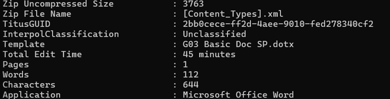
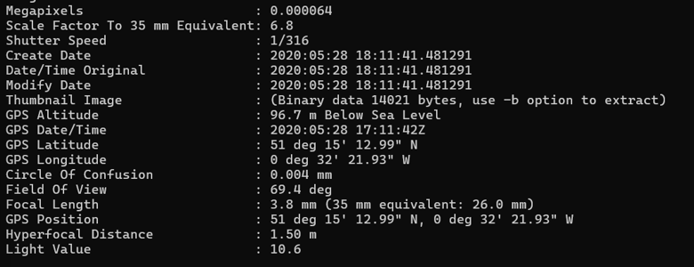
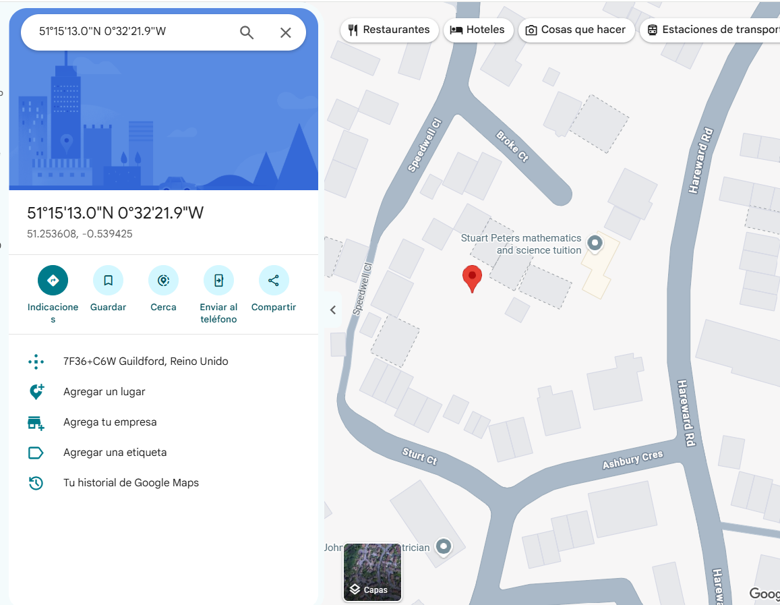
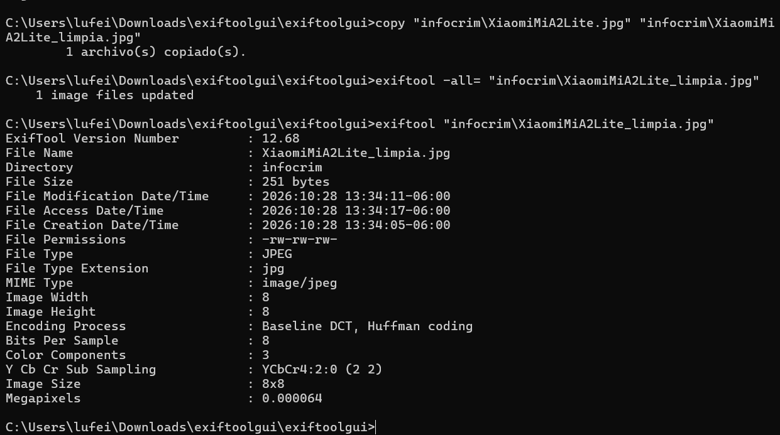

Parte I: Análisis de documento de INTERPOL
Se analizó el fichero ofimático WOA database application form.docx mediante la línea de comandos para revelar la huella digital dejada por el software de edición y los autores.
# Comando de extracción de metadatos del documento
exiftool "infocrim\WOA database application form.docx"- Categorización (INTERPOL): Unclassified
- Template utilizado: G03 Basic Doc SP.dotx
- Tiempo total de edición: 45 minutes
- Compañía propietaria: OIPC - INTERPOL
- Creador original: Carolyn Lejeune
- Última modificación por: Carolyn Lejeune
- Fecha de creación: 2019:05:03 15:35:00Z

Fig 1: Extracción de metadatos de autoría y edición
Parte II: Análisis fotográfico y Geolocalización
El segundo artefacto analizado fue el archivo XiaomiMiA2Lite.jpg. Los metadatos EXIF incrustados por el dispositivo móvil revelaron parámetros detallados de la captura y coordenadas satelitales precisas.
# Comando de extracción de metadatos de la imagen
exiftool "infocrim\XiaomiMiA2Lite.jpg"- Apertura ISO: 100
- Longitud Focal: 3.8 mm
- Uso de Flash: Off, Did not fire (No se utilizó)
- Fecha de creación: 2020:05:28 18:11:41
Descubrimiento de Geolocalización (GPS)
Se localizaron las coordenadas exactas de la toma fotográfica: Latitud 51° 15' 12.99" N, Longitud 0° 32' 21.93" W, con una Altitud de 96.7 m bajo el nivel del mar. Al mapear estas coordenadas en Google Maps, el punto exacto señala un emplazamiento en Guildford, Reino Unido.

Fig 2: Coordenadas GPS extraídas del EXIF

Fig 3: Mapeo de la evidencia digital
Eliminación de Rastro (Sanitización)
Para demostrar la manipulación de evidencia y la sanitización de archivos, se generó una copia del archivo fotográfico y se procedió a eliminar la totalidad de sus metadatos usando el modificador -all=, previniendo así el rastreo del origen de la imagen.
# Clonación del archivo original
copy "infocrim\XiaomiMiA2Lite.jpg" "infocrim\XiaomiMiA2Lite_limpia.jpg"
# Borrado absoluto de metadatos EXIF
exiftool -all= "infocrim\XiaomiMiA2Lite_limpia.jpg"
# Verificación del archivo purgado
exiftool "infocrim\XiaomiMiA2Lite_limpia.jpg"Resultado: Tras la ejecución, el archivo XiaomiMiA2Lite_limpia.jpg únicamente conservó los atributos básicos del sistema operativo (tamaño, dimensiones, tipo MIME), eliminando por completo los datos de GPS, modelo de cámara y fechas de captura.

Fig 4: Verificación del archivo sanitizado sin metadatos sensibles